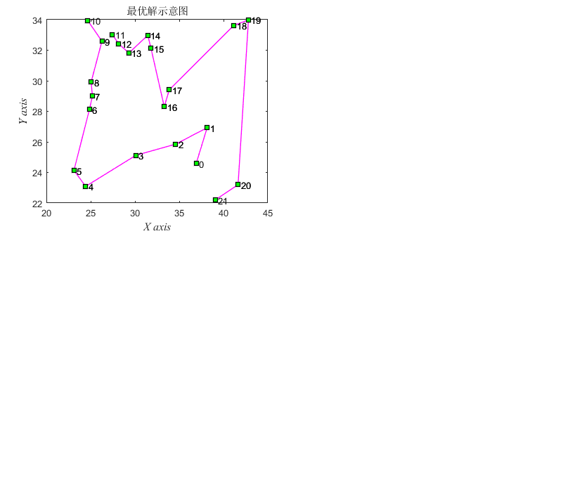
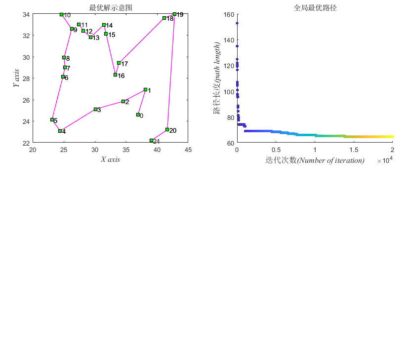
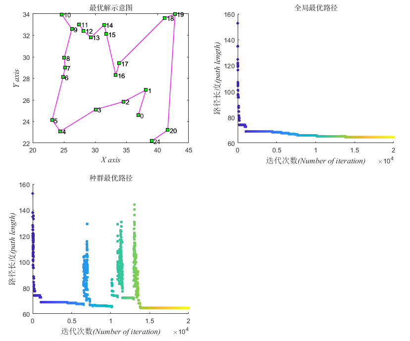
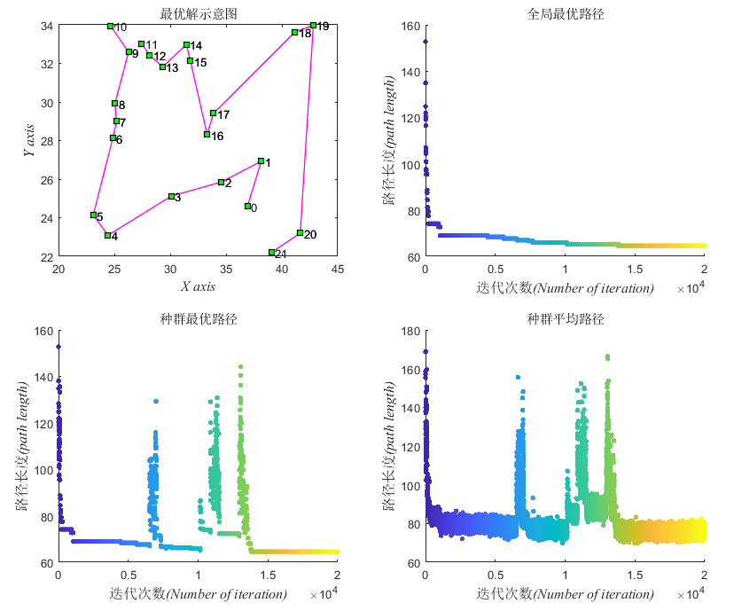

clc;
clear;
close all;
BestSolution=importdata('D:/bch_sc2_OFEC/sc2api/project/pathing_2agent/datafile/best_solution.txt');
UnitSize=size(BestSolution,1);
figure(1)
set(gcf,'position',[100,100,828,689])
subplot(2,2,1);
set(gca,'position', [0.08 0.58 0.38 0.38]);
for i=1:UnitSize/2-1
plot([BestSolution(i,1),BestSolution(i+1,1)],[BestSolution(i,2),BestSolution(i+1,2)],'ms-','LineWidth',1,'MarkerEdgeColor','k','MarkerFaceColor','g');
text(BestSolution(i,1),BestSolution(i,2),[' ',int2str(i-1)]);
text(BestSolution(i+1,1),BestSolution(i+1,2),[' ',int2str(i)]);
hold on;
end
for i=UnitSize:-1:UnitSize/2+2
plot([BestSolution(i,1),BestSolution(i-1,1)],[BestSolution(i,2),BestSolution(i-1,2)],'ms-','LineWidth',1,'MarkerEdgeColor','k','MarkerFaceColor','g');
text(BestSolution(i,1),BestSolution(i,2),[' ',int2str(i-1)]);
text(BestSolution(i-1,1),BestSolution(i-1,2),[' ',int2str(i-2)]);
hold on;
end
title('最优解示意图');
xlabel('\it\fontname{Times New Roman}X axis','FontName','Times New Roman','FontSize',12);
ylabel('\it\fontname{Times New Roman}Y axis','FontName','Times New Roman','FontSize',12);

subplot(2,2,2);
set(gca,'position', [0.58 0.58 0.38 0.38]);
gBest=importdata('D:/bch_sc2_OFEC/sc2api/project/pathing_2agent/datafile/dist_gbest.txt');
x=gBest(:,1);
y=gBest(:,2);
sz=100;
mkr='.';
c=linspace(1,20000,length(x));
scatter(x,y,sz,c,mkr)
title('全局最优路径')
xlabel('迭代次数\it\fontname{Times New Roman}(Number of iteration)','FontSize',12);
ylabel('路径长度\it\fontname{Times New Roman}(path length)','FontSize',12);

subplot(2,2,3);
set(gca,'position', [0.08 0.08 0.38 0.38]);
popBest=importdata('D:/bch_sc2_OFEC/sc2api/project/pathing_2agent/datafile/pop_best.txt');
x=popBest(:,1);
y=popBest(:,2);
sz=100;
mkr='.';
c=linspace(1,20000,length(x));
scatter(x,y,sz,c,mkr)
title('种群最优路径')
xlabel('迭代次数\it\fontname{Times New Roman}(Number of iteration)','FontSize',12);
ylabel('路径长度\it\fontname{Times New Roman}(path length)','FontSize',12);

subplot(2,2,4);
set(gca,'position', [0.58 0.08 0.38 0.38]);
popAvg=importdata('D:/bch_sc2_OFEC/sc2api/project/pathing_2agent/datafile/pop_avg.txt');
x=popAvg(:,1);
y=popAvg(:,2);
sz=100;
mkr='.';
c=linspace(1,20000,length(x));
scatter(x,y,sz,c,mkr)
title('种群平均路径')
xlabel('迭代次数\it\fontname{Times New Roman}(Number of iteration)','FontSize',12);
ylabel('路径长度\it\fontname{Times New Roman}(path length)','FontSize',12);
